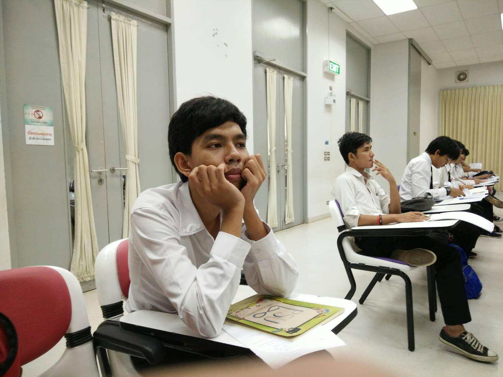

ในวันเรียนครั้งแรกแต่ละวิชาต่างก็ให้นักศึกษาแนะนำตัวกัน แจกเอกสารอธิบายรายวิชา ช่วงแรกก็พยายามจำชื่อเพื่อนๆให้ได้ ไม่ค่อยกล้าเข้าไปคุยกับใครมาก ก็คุยกับเพื่อนผู้ชายทำความรู้จักกันไว้ยังไงก็เป็นผู้ชายเหมือนกันและอยู่หอเดียวกัน มีงานอะไรจะได้ช่วยเตือนช่วยตามกันได้ และพยายามทำความรู้จักเพื่อนเพิ่มไปเรื่อยๆเพราะต้องเรียนด้วยกันอีกนาน.
การเรียนช่วงแรกๆก็ต้องปรับตัวกันเยอะหน่อย และตึกเรียนต่างๆก็ต้องตามเพื่อนๆไปเพราะไม่รู้ว่าอยู่ตรงไหน ต้องปริ้นชีทเรียนเกือบทุกครั้งก่อนที่จะเข้าเรียนวิชาต่างๆ ต้องจดเสริมในสิ่งที่อาจารย์พูดเพราะไม่มีในชีทและในหนังสือ เรียนไปได้ซักพักรุ่นพี่เรียกรวมน้องปี1เพื่ออธิบายและซ้อมสำหรับกิจกรรมที่ใกล้จะมาถึง ก็คือพานไหว้ครู thanks staff วัดผลสัมฤทธิ์ song และกิจกรรมดาวเดือนมหาลัย รุ่นพี่ให้ซ้อมจนดึกถึง2ทุ่ม และเพิ่มเป็น 4 ทุ่มในช่วงหลังเป็นอะไรที่ทำให้เวลานอนไม่พอมาก แต่ละวันไม่ค่อยมีเวลาทำอะไรเองเลย ต้องเสียเวลาแต่ละวันไปทำกิจกรรมที่ทำให้เวลาชีวิตเสียไปอย่างมากแทนที่จะได้เรียนและกลับมาพักผ่อนให้เต็มที่ทำให้แต่ละวันที่ต้องไปเรียนเช้าแทบจะหลับในห้องอยู่ตลอดเวลา.
เรียนเสร็จต้องไปทำกิจกรรมต่อตั้งแต่เย็นถึงดึกทั้งที่เรียนก็ไม่ค่อยรู้เรื่องอยู่แล้วไม่มีเวลาทบทวนบทเรียนอะไรเลย ถึงจะไม่อยากไปทำกิจกรรม แต่ก็กลัวว่าถ้าไม่ไปทำแล้วเพื่อนจะไม่ค่อยชอบเรา ไปกิจกรรมเพื่อไปช่วยเพื่อนทำให้เสร็จๆแม้จะรู้สึกโครตเบื่อ รำคาญไม่อยากทำก็เถอะ ข้อดีอย่างเดียวคือได้สนิทกับเพื่อนมากขึ้น เพื่อนๆในสาขาแบ่งออกเป็นหลายกลุ่มส่วนกลุ่มของผมก็ส่วนมากช่วงแรก ก็ไปนั่งกับกลุ่มนู้นกลุ่มนี้ดูบ้างลองคุยดู สุดท้ายก็มานั่งรวมๆกับกลุ่มชายล้วนดูจะเข้ากันที่สุดล่ะนะ เพื่อนผู้หญิงก็มีนะ แต่พอรู้จักไปซักหน่อยก็รู้สึกพูดมากแท้ รู้สึกรำคาญเลยไปอยู่กลุ่มผู้ชายดีกว่า และก็สร้างกลุ่มเฟสผู้ชายในหอใน เพื่อคุยกันและช่วยตามไปเรียน บอกข่าวสารว่าวิชาไหนเรียนไม่เรียนบลาๆ ชวนไปกินข้าว หาอะไรกินข้างนอก ไปเที่ยวกันบ้างบางครั้ง.
